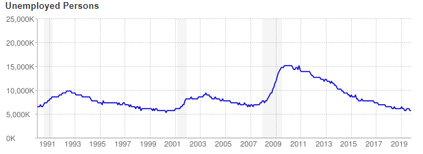

The Unemployment Crisis

US Unemployment.
Department of Numbers, www.deptofnumbers.com/unemployment/us/.
The recession caused many to lose their jobs, but people were already struggling before it hit. The recession was a dark time for many in the U.S and all around the world. People were losing their life savings and their homes. It has been described as the greatest economic downfall since the Great Depression. Due to it many of the workforce lost their employment. Unemployment has been a crisis for a long time now. Part of the blame can go towards the rising number of population of people on earth. In 2009 there were 15,352,000 people unemployed in the U.S With numbers like this it's easy to see why the number of homeless U.S citizens has risen to where it is now.
History.com Editors. Great Recession. History.com, A&E Television Networks, 4 Dec. 2017, www.history.com/topics/21st-century/recession.